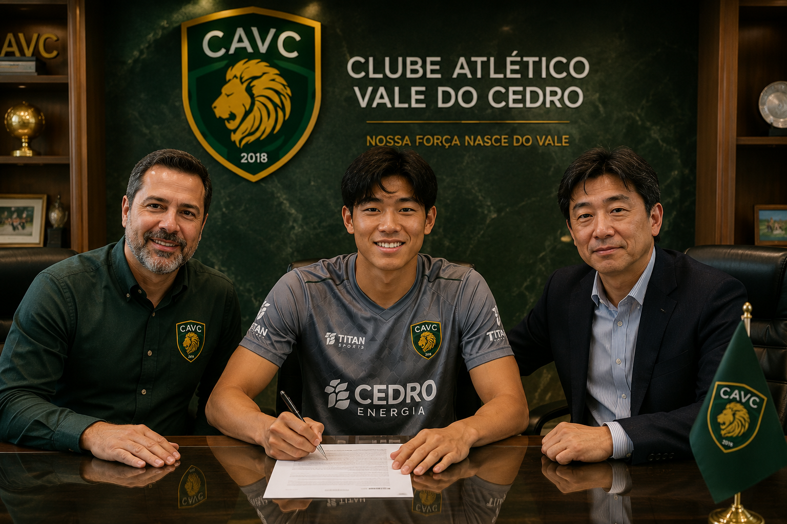
Mercado da Bola
Kenji Nakamura é o novo goleiro do CAVC
Goleiro japonês chega para reforçar o elenco na temporada 2026.
Ler mais →Nossa força nasce no Vale.
Representando o interior catarinense com paixão, organização e o compromisso de formar grandes atletas.

Fundado em 15 de março de 2018, o CAVC representa a cidade fictícia de Vale do Cedro, no interior de Santa Catarina.
Conhecido como Leão do Vale, o clube se destaca pela gestão moderna, formação de atletas e identidade forte no futebol do interior.
Suas cores oficiais — verde escuro, dourado e branco — simbolizam tradição, força e ambição esportiva.
História completaFundado em 15 de março de 2018, o Clube Atlético Vale do Cedro nasceu com o objetivo de representar uma nova geração do futebol catarinense. O que começou como uma academia de preparação de atletas evoluiu para um projeto ainda maior, transformando-se em um clube profissional e abrindo um novo capítulo na história do futebol catarinense. A ideia partiu do diretor Rodrigo Andrade, que idealizou um novo patamar para o desenvolvimento esportivo na região. Desde o início, o projeto foi baseado em três pilares: organização, desenvolvimento de atletas e conexão com a comunidade.
Com uma identidade inspirada na força do interior, o clube adotou o apelido de Leão do Vale, símbolo de coragem, determinação e espírito competitivo.
Nos primeiros anos, o CAVC concentrou seus esforços na construção de uma estrutura sólida, investindo nas categorias de base e na formação de profissionais preparados para o futebol moderno.
A inauguração da Arena do Cedro e do Centro de Treinamento José Carvalho marcou uma nova fase na história do clube, permitindo que atletas e comissão técnica tivessem uma estrutura compatível com grandes projetos esportivos.
Atualmente, o Clube Atlético Vale do Cedro representa a ambição de um clube jovem, moderno e conectado com sua torcida, buscando escrever novos capítulos dentro e fora dos gramados.
A canção que representa a paixão e a coragem da torcida do CAVC. Esse hino ecoou pelo estádio quando o próprio cantor Pedro Vitor decidiu tomar o microfone do narrador e puxou a torcida pra cantar o hino do leão quando estavamos 1x1. Conseguimos virar o jogo e vencer grandiosamente.

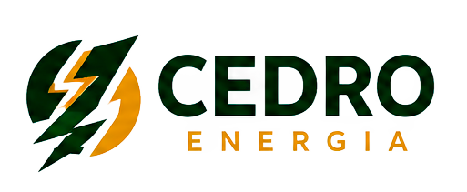
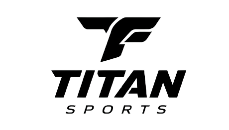
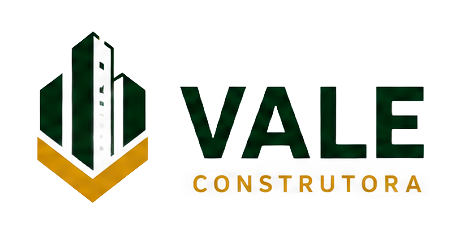
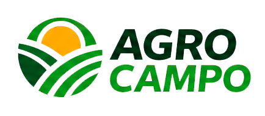
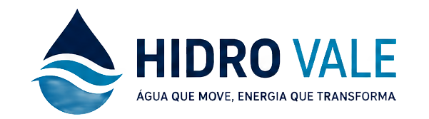
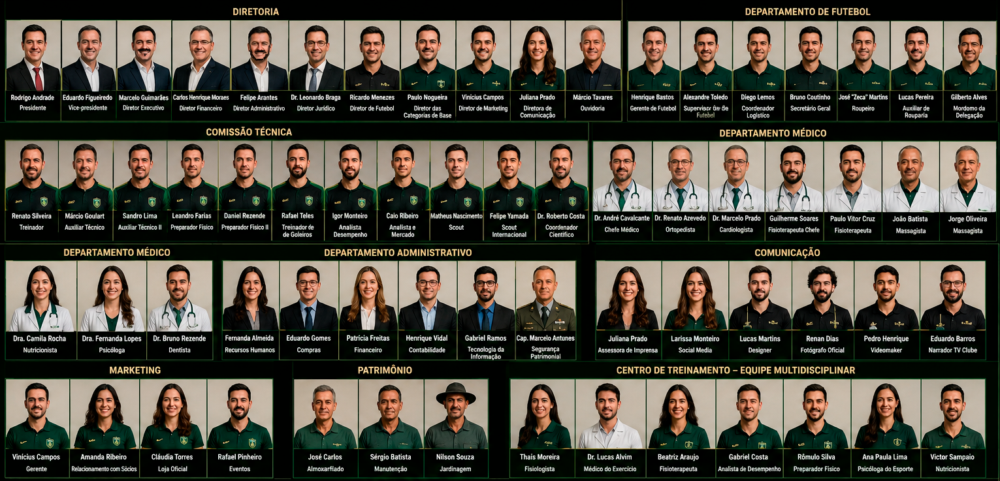
O elenco profissional do Clube Atlético Vale do Cedro é formado por atletas comprometidos com disciplina, desenvolvimento e competitividade.
O trabalho diário é realizado no Centro de Treinamento José Carvalho, reunindo jogadores, comissão técnica e profissionais especializados.
Conhecer o elenco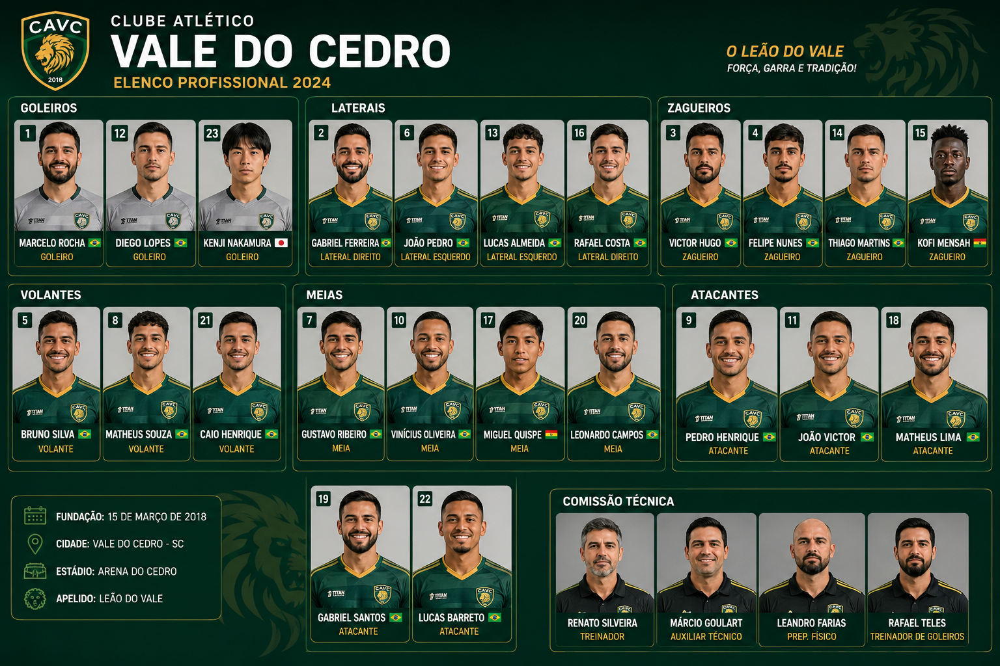
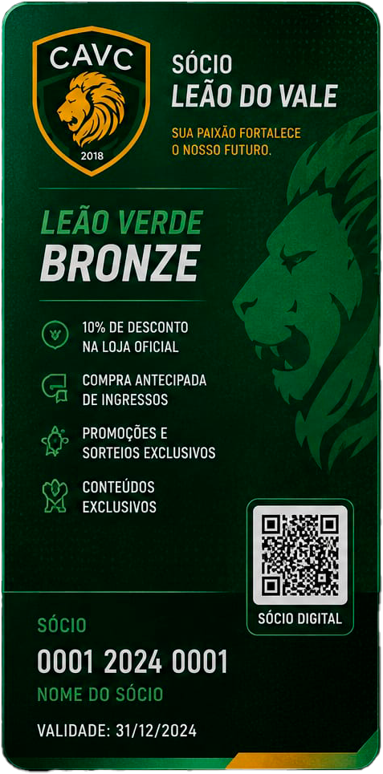
Para quem deseja apoiar o clube e começar a fazer parte da família CAVC.
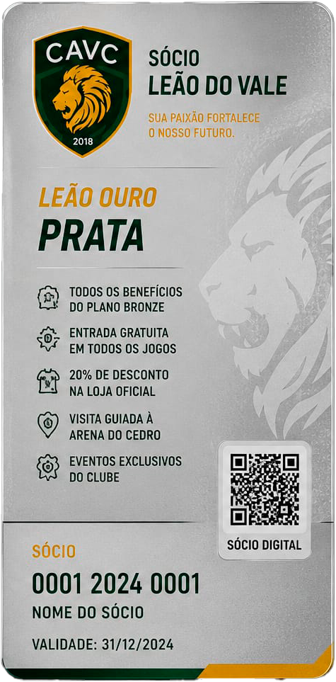
Mais benefícios, vantagens exclusivas e prioridade em experiências do clube.
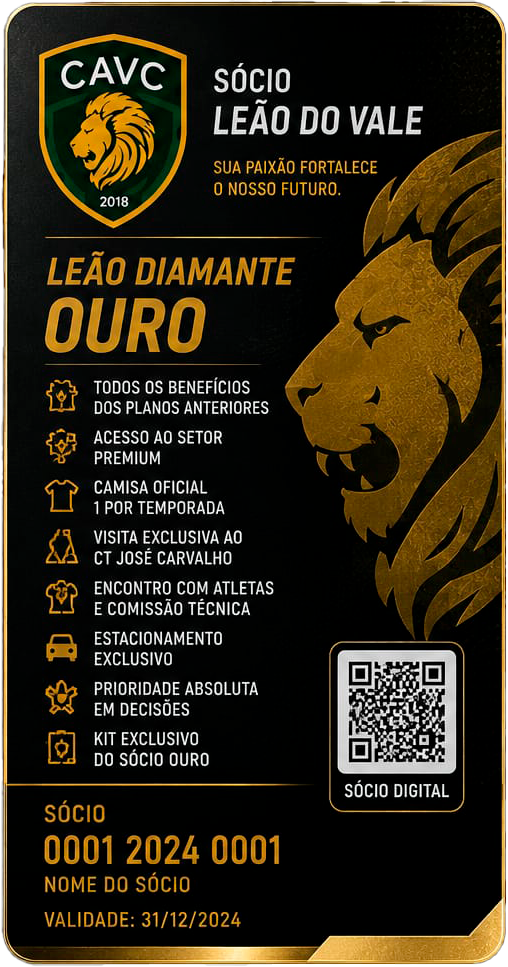
O plano mais completo para quem vive intensamente o Leão do Vale.
Entre em contato com os departamentos oficiais do clube. Nossa equipe está preparada para atender torcedores, parceiros e profissionais da imprensa.
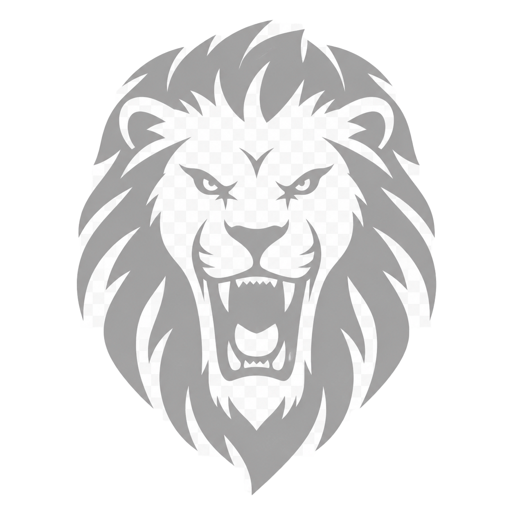
Sócio Torcedor
Sócio 000001